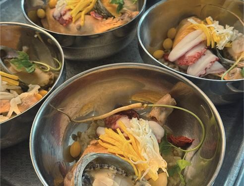

소식 › 2026년 가을 하일렌소식
2026년 가을 하일렌소식 「회복의 계절」
하일렌요양병원 의료진과 나눈 지난 항암 토크 콘서트입니다. 오는 10월 23일에는 초청 교수님 두 분과 함께합니다. 2026년 가을 소식지 「회복의 계절」의 소식 4편과 특강 안내를 이 페이지에 옮겼습니다.

- 초청 특강
- 2026년 10월 23일(금) 오전 10시 30분부터 12시까지
- 장소
- 하일렌요양병원 10층 스카이라운지
- 대상
- 누구나 참여하실 수 있습니다. 따로 신청하지 않으셔도 됩니다.
- 문의
- 원내 상담실 · 카카오톡 채널 · 062-439-1000
표지 「회복의 계절」
치료의 모든 시기, 하일렌요양병원이 함께합니다.
하일렌 소식
암중점 메디컬 레지던스 하일렌요양병원의 소식을 전합니다.
01. 걷고 싶은 날 나서는, 편백숲 트레킹
가을빛 물든 숲길, 함께 나섭니다.


편백숲 트레킹은 컨디션이 허락하는 날 함께 나서는 프로그램입니다. 참여를 원하시는 분들과 일정을 맞춰 진행하고, 그날의 몸 상태에 따라 거리를 조절합니다. 처음엔 짧게 걷다가 조금씩 늘려 가시는 분들이 많습니다. 나란히 걷다 보면 어느새 이웃이 되고, 내려오는 길엔 이야기가 남습니다.
02. 뜨개공방·매듭공예·캘리그라피
날이 선선해지면 손끝에 더 집중하게 됩니다.


환자분들의 요청으로 시작한 뜨개공방이 문을 열었습니다. 매듭공예에서는 팔찌와 키링을 엮고, 캘리그라피에서는 마음에 담아둔 문장을 손거울에 새깁니다. 한 코, 한 매듭, 한 획에 집중하는 동안 생각이 단순해지고 호흡이 고릅니다. 완성한 작품은 병실 머리맡에, 가방 한쪽에, 선물로 건넨 가족의 손에 남습니다. [디렉터 확인] 「내 손으로 무언가를 만들어 낸 기억은 회복의 자신감이 되어 돌아옵니다」 문장을 웹판에 유지할지
03. 특식데이, 병실까지 닿는 한 끼
크게 한 번보다, 자주 나눕니다.

한 달에 한 번 크게 차리던 특별식을, 이제는 자주 나누는 '특식데이'로 바꿨습니다. 주말에는 선호도가 높은 메뉴를 중심으로 식탁을 차리고, 주중에도 특식데이가 이어집니다. 조리장이 주말에도 나와 직접 살필 만큼 정성을 들이고 있습니다. 식당까지 오시기 어려운 날에는 병실에서도 같은 한 끼를 드실 수 있도록 준비합니다. [디렉터 확인] 「병실에서도 같은 한 끼를 드실 수 있도록 준비합니다」의 원내 확인 기록 잘 드시는 하루하루가 회복의 바탕이 되기에, 하일렌요양병원의 식탁은 계속 달라지고 있습니다.
04. 암정보 도서관, 링크 하나에 담았습니다
치료가 궁금할 때 찾아보시라고 한곳에 모았습니다.
항암 부작용은 언제 병원에 연락해야 하는지, 수술 후 언제부터 걸어도 되는지, 진료실을 나서면 다시 궁금해집니다. 하일렌요양병원은 그 질문에 답하는 영상과 글을 '암정보 도서관'에 모았습니다. 홈페이지에서는 아래 암정보 도서관 페이지에서 바로 보실 수 있습니다. [디렉터 확인] 도서관 버튼을 외부 링크 허브 대신 홈페이지 도서관 페이지로 연결할지
2026년 가을 초청 특강
대학병원 교수 두 분을 모십니다.

특강은 2026년 10월 23일(금) 오전 10시 30분부터 12시까지 10층 스카이라운지에서 엽니다. 누구나 참여하실 수 있으며, 따로 신청하지 않으셔도 됩니다. 궁금한 점은 원내 상담실(062-439-1000) 또는 카카오톡 채널로 물어보세요.
1부 10시 30분 이창영 교수 「폐암 수술의 최신 경향」
건강검진에서 "폐에 결절이 보인다"는 말을 들으면 그날부터 마음이 무겁습니다. 간유리음영결절은 언제 지켜보고 언제 수술하는지 짚습니다. 폐를 얼마나 떼는지 짚습니다. 흉강경과 로봇수술로 회복이 어떻게 달라졌는지 짚습니다. 그렇게 폐암 수술이 지금 어디까지 왔는지 순서대로 정리합니다. 진단을 받으신 분도, 결절을 지켜보고 계신 분도 오시면 됩니다. [디렉터 확인] 「간유리음영결절」「흉강경」「종격동종양」「반절제·전절제」에 괄호 풀이를 넣을지. 원자료에 풀이 문장이 없어 연자 확인 없이는 넣지 않았습니다.
- 연세대학교 의과대학 흉부외과 교수
- 대한폐암학회 · 대한흉부종양외과학회
- 진료 분야는 폐암, 간유리음영결절, 종격동종양, 기관지질환입니다.
[디렉터 확인] 연자 소속 병원명 B-10 예외 추가 여부(D2 #58). 두 연자 약력의 소속 병원명 줄은 확정 전까지 뺐습니다. 예외가 확정되면 가을호 인쇄본 연자 프로필의 소속 병원명 줄을 되살립니다.
2부 11시 10분 강상욱 교수 「갑상선 암의 진단과 치료」
'착한 암'이라는 말에 안심하다가 시기를 놓치기도 합니다. 어떤 혹을 검사하는지 짚습니다. 반절제와 전절제는 무엇으로 갈리는지 짚습니다. 로봇수술은 누구에게 맞는지 짚습니다. 진단부터 수술, 이후 관리까지 순서대로 정리합니다. 수술을 앞두신 분도, 이미 마치고 회복중이신 분도 오시면 됩니다.
- 연세대학교 의과대학 외과학교실 교수
- 대한갑상선내분비외과학회 · 대한수술감염학회
- 진료 분야는 갑상선암, 부갑상선, 부신, 로봇수술입니다.
[디렉터 확인] 강의 제목 표기가 인쇄본 표지는 「갑상선암의 진단과 치료」, 웹 시안·10월 공지는 「갑상선 암의 진단과 치료」로 다릅니다. 하나로 확정
더 보기
소식지 뒷면에 실린 의료진, 치료센터, 단기입원, 오시는 길 안내는 홈페이지의 각 페이지에서 보실 수 있습니다.
- 의료진 소개. 하일렌요양병원 의료진의 진료과와 약력을 보실 수 있습니다.
- 치료센터 안내. 입원, 단기입원 및 외래 치료센터를 안내합니다.
- 단기입원·외래 안내. 단기입원은 1박 2일부터입니다. 주중 및 주말 단기 일정으로 입원하실 수 있습니다.
- 오시는 길·면회 안내. 하일렌요양병원은 전남광주통합특별시 서구 상무대로 1176에 위치해 외래 및 통원 진료가 편리합니다. 이동·교통 문의는 병원에 문의해 주세요.
[디렉터 확인] 인쇄본 뒷면의 거리표(버스터미널·역·타 병원 실명과 소요 시간)와 「도심 한 가운데 위치하여 접근이 용이합니다」는 웹판에서 뺐습니다. 대체 문장 「이동·교통 문의는 병원에 문의해 주세요」 사용 여부
카카오톡 채널에서 입원 상담 및 프로그램 예약이 가능합니다. 입원·외래·단기입원 상담은 원내 상담실에서 안내합니다.
제공 하일렌요양병원 · 검토 [디렉터 확인] 검토 의료진 · 검토일 [디렉터 확인] 검토일 · 출처 하일렌 소식지 2026 가을호 「회복의 계절」(인쇄본·웹 시안 2026-09-18), 2026년 10월 프로그램 공지(2026-09-30), 하일렌 발행정본 확정 표기(2026-08-20 병원 검수) · 갱신 2026-10-05